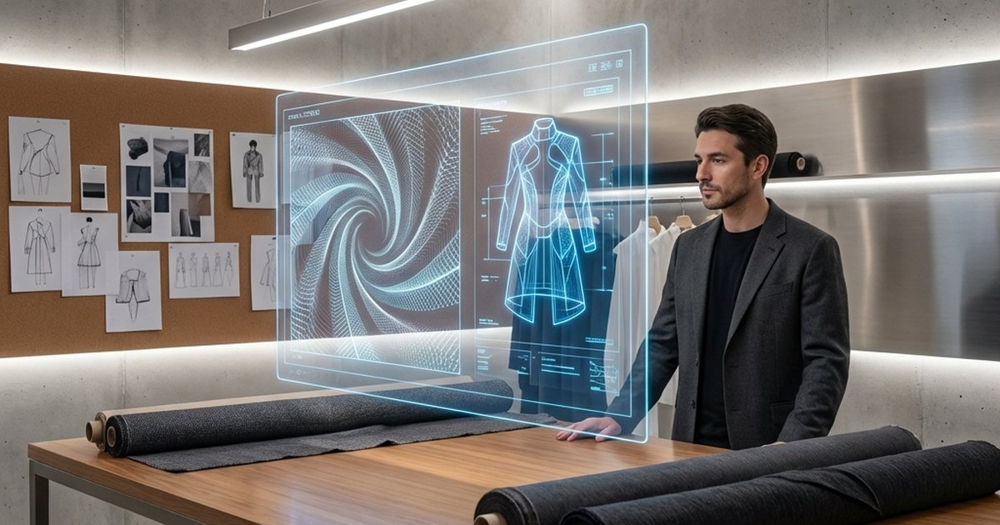
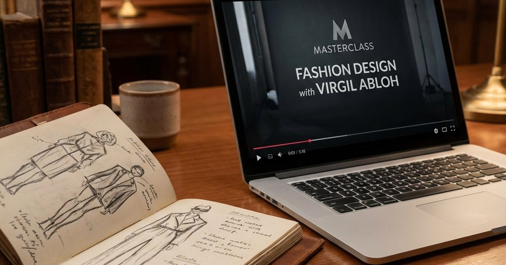
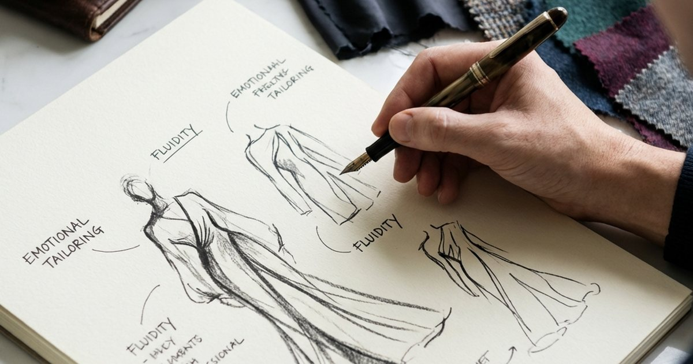
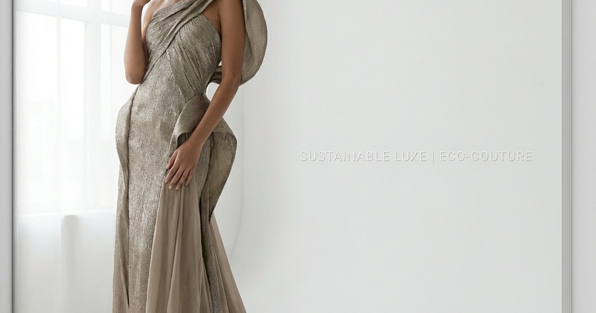
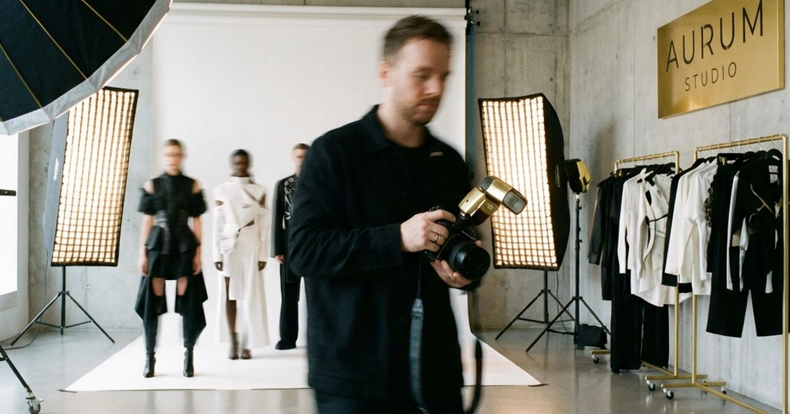

AI 創意革命：創意主權的重新定義
專訪 2026 年尖端設計師，探討 AI 如何從輔助工具演變為設計靈感的核心。探討人工智慧的跨界美學與創意過程，涵蓋台灣設計界的實踐。拆解設計師思維、工藝細節與品牌更新，幫助讀者看懂作品背後的美學選擇與產業脈絡。並補充適合台灣日常的檢查重點與延伸閱讀，方便搜尋後快速掌握方向。
閱讀全文 →獨家專訪那些引領時代的頂尖設計師、創意總監與時尚偶像，揭示他們的創作靈感、品牌哲學與職涯故事。 本主題旨在探索時尚產業的幕後精神，讓讀者不僅看見華服，更能理解設計的深度與價值。
從設計思考、材質語言到品牌方法論，這裡整理最新值得細讀的設計觀點。

專訪 2026 年尖端設計師，探討 AI 如何從輔助工具演變為設計靈感的核心。探討人工智慧的跨界美學與創意過程，涵蓋台灣設計界的實踐。拆解設計師思維、工藝細節與品牌更新，幫助讀者看懂作品背後的美學選擇與產業脈絡。並補充適合台灣日常的檢查重點與延伸閱讀，方便搜尋後快速掌握方向。
閱讀全文 →深入探討百年奢侈品牌的重塑之路。專訪創意總監 Alessandro Rossi，解析如何平衡品牌遺產與現代創新，並結合台灣高端市場洞察。拆解設計師思維、工藝細節與品牌更新，幫助讀者看懂作品背後的美學選擇與產業脈絡。並補充適合台灣日常的檢查重點與延伸閱讀，方便搜尋後快速掌握方向。
閱讀全文 →探索 2026 年精品趨勢：3D 列印與傳統皮革工藝的革命性融合。Elite Fashion 為你解析數位工藝如何重塑頂級奢華包袋，並結合台北與全球工坊實踐。拆解設計師思維、工藝細節與品牌更新，幫助讀者看懂作品背後的美學選擇與產業脈絡。
閱讀全文 →深度評測 2026 年最強數位繪圖工具。iPad Pro M4 與 Wacom Cintiq Pro 誰才是時尚設計師的終極畫布？結合台北設計圈實測，解析 Procreate 與 Photoshop 的生態戰爭。
閱讀全文 →
專訪新銳設計師 Emma Chen，解析如何利用 3D 列印與數位製衣技術重塑時尚邊界。結合台北時裝週與金點設計獎評選，探討數位與人文溫度的完美融合。拆解設計師思維、工藝細節與品牌更新，幫助讀者看懂作品背後的美學選擇與產業脈絡。
閱讀全文 →
整理 2026 年線上學習平台的選課差異。跟 Marc Jacobs 學設計，還是跟職人學技法？解析 MasterClass 與 Domestika 的真實投資回報率 (ROI)，並對比 Hahow 等台灣平台。
閱讀全文 →當工作室不再受限於四面牆。評測 iPad Pro M4 與 Wacom Cintiq Pro，分析哪一款是 2026 年時尚設計師的最佳數位畫布...
閱讀全文 →跟 Marc Jacobs 學設計，還是跟西班牙插畫家學技法？深度評測 MasterClass 與 Domestika，分析自學教育的真實投資回報率 (ROI)...
閱讀全文 →專訪 2026 年尖端設計師，探討 AI 如何從輔助工具演變為設計靈感的核心。探討人工智慧的跨界美學...
閱讀全文 →探索 2026 年最前衛的工藝趨勢：將 3D 列印技術融入傳統皮革手工藝。重塑奢華配件的定義...
閱讀全文 →
深入解析 2026 年時裝趨勢「情緒剪裁」。由頂尖品牌創意總監揭秘，如何透過剪裁引發情感共鳴...
閱讀全文 →
在巴黎瑪黑區的工作室裡，我們與這位引領極簡風潮的設計師進行了深度對話。她談到了如何在減法美學中 尋找加法的力量，以及為什麼「少即是多」在當代社會中更顯珍貴。這不僅是一場關於時尚的對話...
閱讀全文 →
這位年僅28歲的設計師正在用3D列印與數位製衣技術挑戰傳統時尚界。從中央聖馬丁畢業後，她創立了 自己的品牌，致力於將科技與工藝完美融合，創造出既未來感十足又充滿人文溫度的作品...
閱讀全文 →作為國際知名奢侈品牌的創意總監，他在過去五年間成功將這個百年品牌帶入新時代。在這次專訪中， 他分享了品牌重塑的心路歷程、如何平衡傳承與創新，以及對未來奢侈品產業的獨到見解...
閱讀全文 →
從有機材質到零廢棄生產流程，這位設計師正在證明永續時尚不僅是一種理念，更是未來的必然趨勢。 她的品牌在保持高級美感的同時，實現了100%可追溯的供應鏈和碳中和生產...
閱讀全文 →
這位傳奇攝影師的作品定義了過去二十年的時尚影像美學。從Vogue封面到品牌廣告大片，他的鏡頭 總能捕捉到最純粹的美與情感。在這次對話中，他分享了創作理念和對當代視覺文化的思考...
閱讀全文 →作為國際一線明星的御用造型師，她深知服裝不僅是裝飾，更是自我表達的工具。從紅毯造型到日常穿搭， 她總能找到最適合的風格語言。本次專訪深入探討了造型藝術的專業技巧與創意靈感...
閱讀全文 →理解創作背後的材料、工藝與品牌選擇。
適合想理解服裝背後工藝、品牌語言、創作脈絡與長期風格選擇的讀者。
趨勢報導看外部流行訊號，設計師視角更重視作品形成的原因、材料取捨與品牌長期方向。
可以幫助建立判斷標準，例如辨認剪裁、材質、工藝與品牌定位是否符合自己的穿著需求。
依更新時間整理，方便從主題分類頁直接進入所有相關文章。